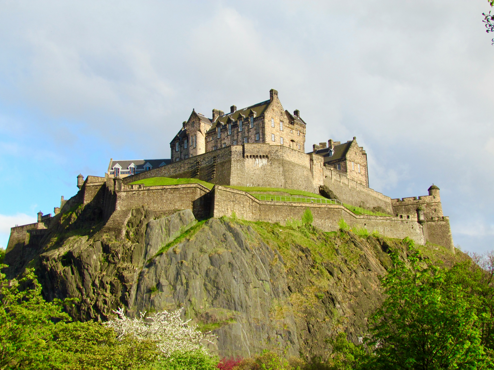
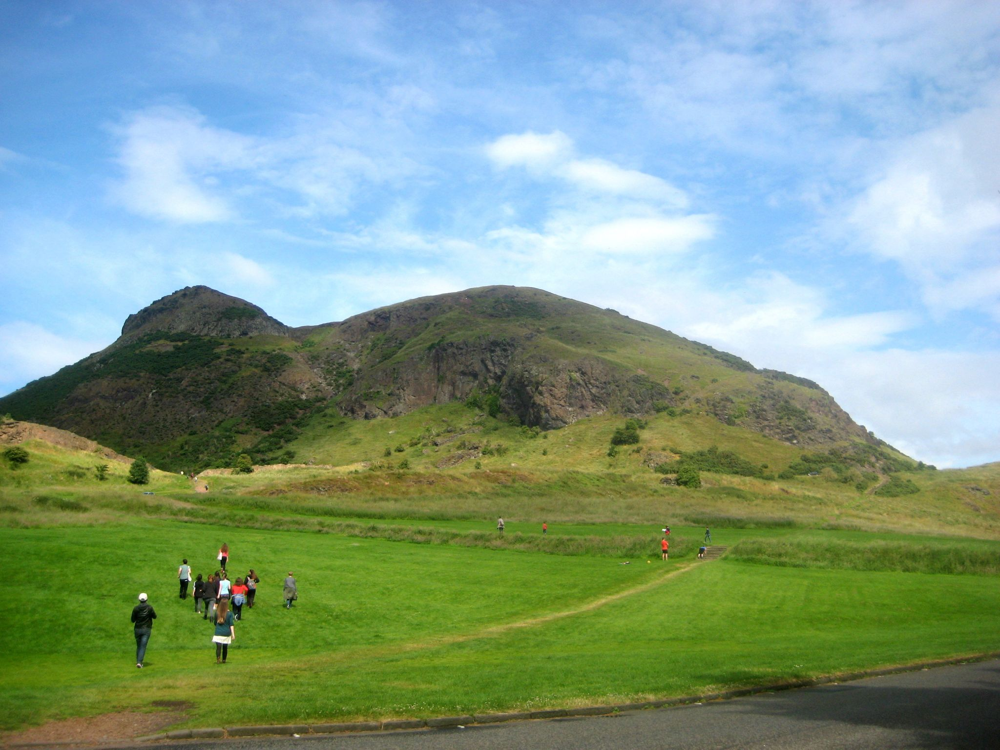

Tours
Choose one of our self-guided walking tours below by clicking on the header:
Old Town Tour
Explore Edinburgh's historic Old Town
Tour Stops : Edinburgh Castle, Grassmarket, Victoria Street, Greyfriars Bobby Statue, National Museum of Scotland, The Real Mary King's Close, St Giles Cathedral, Royal Mile, Scott Monument, Palace of Holyrood.
Estimated time : 2 to 4 hours for full tour, depending on time spent at each stop

Edinburgh Castle
7 Hills of Edinburgh
A challenging walk to all seven historic hills
Tour Stops : Arthur's Seat, Castle Rock, Calton Hill, Corstorphine Hill, Craiglockhart Hill, Braid Hills, Blackford Hill
Estimated time : 5 to 7 hours for full tour, depending on time spent at each hill

Arthur's Seat
Merchiston Campus Tour
Explore the famous sights of Napiers' Merchiston Campus
Tour Stops : Voi Bike stop, Tesco, Library, JKCC, and Film & Media Building
Estimated time : 5 minutes

Merchiston Campus